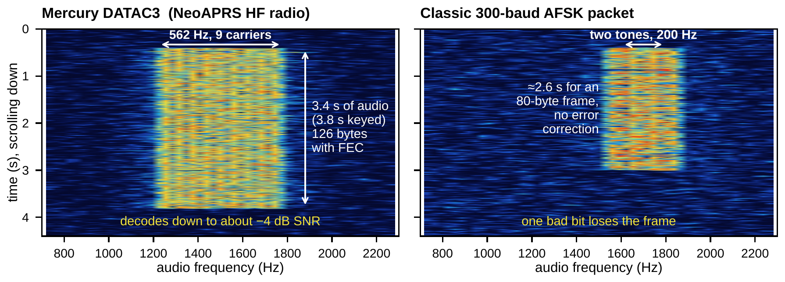
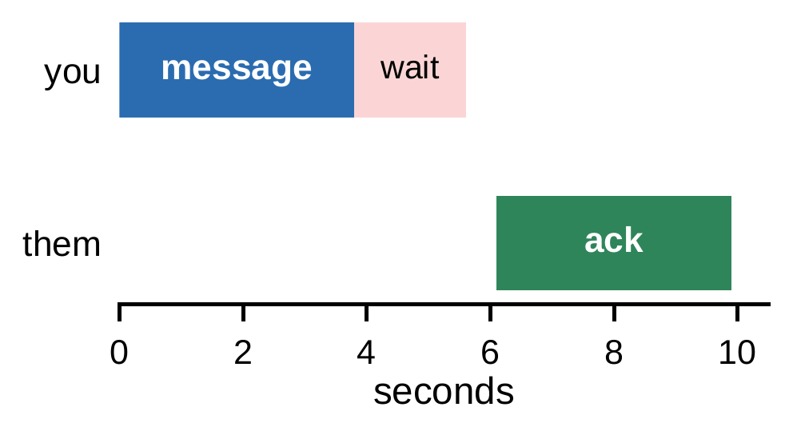

Digital modes · HF APRS ·
APRS Below the Noise: Mercury Comes to HF
NeoAPRS puts a modern OFDM modem inside an APRS client. Here is what it sends, how it shares the channel, and how to get your SSB rig on the air.

| Mercury DATAC3 (NeoAPRS HF radio) | 562 Hz, 9 carriers 3.4 s of audio (3.8 s keyed) 126 bytes with FEC decodes down to about −4 dB SNR |
|---|---|
| Classic 300-baud AFSK packet | two tones, 200 Hz ≈2.6 s for an 80-byte frame, no error correction one bad bit loses the frame |
On the afternoon of 4 November 2026 we were trading APRS messages on 2 m through the local digipeaters when the VHF path at one end went away. We didn’t stop the conversation. We ticked the HF radio in NeoAPRS, put both rigs on 50.620 MHz USB and kept typing. For the next twenty minutes, over 40.8 km, every message got through. One of them was sent with a single watt and decoded 3 dB below the noise.
That is not what HF APRS usually feels like. Since the early 1990s, APRS on HF has meant 300-baud AFSK: two tones 200 Hz apart, no error correction, and a frame that dies if one bit goes wrong. On a real skywave path, echoes arrive a couple of milliseconds apart, and a 3.3 ms symbol doesn’t stand a chance.
Nine carriers and a strong code
NeoAPRS, a free APRS client for Windows, macOS, Linux and the Raspberry Pi, now has a second radio for HF. It is built around Mercury, the open-source HF modem from Rhizomatica’s HERMES project. Mercury sends APRS frames in DATAC3, one of the data modes of the FreeDV/codec2 project.
Instead of two tones, DATAC3 sends nine carriers 62.5 Hz apart, a 562 Hz-wide block centred on 1500 Hz audio (Figure 1). Each carrier sends a QPSK symbol every 22 ms: 16 ms of data plus a 6 ms guard that swallows multipath echoes. Every fifth symbol is a known pilot, so the receiver can follow the fading and the phase of each carrier. On top of it all sits an LDPC code of rate 1/2: half of what goes out is error correction.
The price is air time. Every frame lasts 3.8 s from PTT ON to PTT OFF and carries 126 bytes, of which 123 are free for the APRS frame. That is enough for a full 67-character message. The net rate is about 316 bit/s, roughly that of 300-baud packet.
The gain is sensitivity. On a simulated channel, DATAC3 decodes down to about −4 dB SNR in 3 kHz. That is some 6 dB better than even an ideal 300-baud modem in plain noise, and the gap grows on fading paths, where AFSK falls apart.
“One message was sent with a single watt and decoded 3 dB below the noise.”
Sharing one frequency politely
A 3.8-second frame, on a frequency shared by stations hundreds of kilometres apart, calls for good manners, and NeoAPRS builds them in:
- No digipeaters, no path. Every station hears every frame directly or not at all.
- Listen before talk. NeoAPRS reads the modem’s spectrum 20 times a second and holds its own frames while anything as wide as a frame is on the channel.
- Patient acks. The ack waits until the other station’s frame has cleared, so a message and its ack take about ten seconds (Figure 2). Retries come at 32, 64 and 128 s, each with a random extra wait.
- Quiet beacons. At most one beacon every 30 minutes, with up to five minutes of random delay. Stations that start together drift apart instead of colliding every time.

You don’t have to change how you operate. FM and HF stations share one map and one message list, and you choose the radio for each station. Mercury comes inside NeoAPRS, and there is nothing else to install. With no HF rig handy, the Dummy HF radio makes up distant stations and plays the modem through your speakers, so you can hear what it sounds like.
What you need
- An SSB transceiver and a sound-card interface: the rig’s own USB audio, a DigiRig or a SignaLink.
- PTT by RTS or DTR, a CM108 GPIO, or VOX. With VOX, a 150-ms tone ahead of each frame wakes the rig.
- Dial, USB: 7.0541 MHz (40 m), 14.1070 MHz (20 m), 10.1462 MHz (30 m), 50.620 MHz (6 m). These are proposals for now.
- Press Tune (a 1 kHz tone) and set Transmit level so that the ALC does not move.
- Use your normal SSB receive filter, not a narrow data filter.
- Both rigs within ±50 Hz of each other. On 6 m a TCXO helps.
- NeoAPRS for Windows, macOS, Linux or the Pi: https://neo.oh2gba.eu
Your turn
Our first test ran on 6 m. Over that distance it was ground wave, not skywave, so the real test is still ahead: 40 and 20 m, over a few hundred to a couple of thousand kilometres. That’s where we need you. Load NeoAPRS, tick the HF radio, call on 7.0541 MHz USB, and tell us what worked (band, distance, power) at neoaprs@oh2gba.eu or on GitHub. See you below the noise.
NeoAPRS is free software (GPL-3.0). Mercury is by Rhizomatica (GPL-3), and the DATAC modes are by David Rowe and the FreeDV/codec2 team. Source: github.com/oh2gba/neoaprs.
Download NeoAPRSThe key numbers on one pageThe technical note